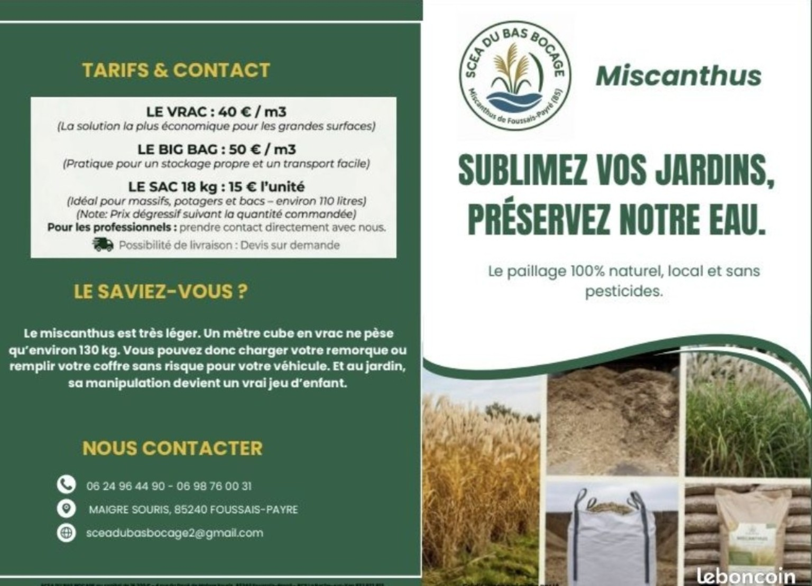

Réduit fortement les besoins d'arrosage.
Produit local sans pesticides.
Protège les plantations été comme hiver.
Longue tenue et entretien réduit.
| Produit | Prix |
|---|---|
| Vrac | 40 € / m³ |
| Big Bag | 50 € / m³ |
| Sac 18 kg (~110 L) | 15 € |
Tarifs dégressifs sur quantité. Livraison possible sur devis.

Le miscanthus est très léger : environ 130 kg par m³. Facile à transporter et à manipuler.
📞 06 24 96 44 90 - 06 98 76 00 31
📍 Maigre Souris, 85240 Foussais-Payré
✉️ sceadubasbocage2@gmail.com